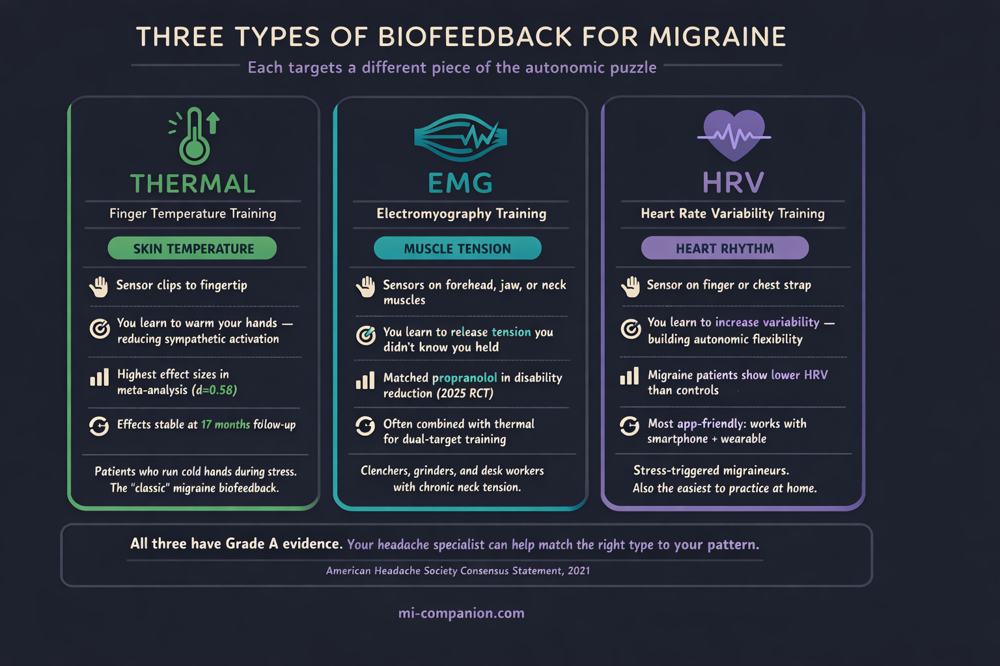

By Rustam Iuldashov
30 years lived experience with chronic migraine | Sources: 24 peer-reviewed references including Pain (n=55 studies), Complementary Therapies in Medicine (n=558), Applied Psychophysiology and Biofeedback (n=51) | Last updated: March 13, 2026
Medical Review: This content is based on peer-reviewed research from Pain, Complementary Therapies in Medicine, Headache, Applied Psychophysiology and Biofeedback, General Hospital Psychiatry, JMIR Formative Research, JMIR Human Factors, Behavioral and Brain Functions, Current Pain and Headache Reports, BMJ, and Egyptian Journal of Neurology, Psychiatry and Neurosurgery.
Important Notice: This article is for informational purposes only and does not replace professional medical advice. The author is not a licensed physician or healthcare professional. Always consult your doctor before making changes to your treatment plan.
Key Takeaways
- Biofeedback has Grade A evidence for migraine prevention — on par with propranolol and topiramate.[1]
- Three types lead: thermal, EMG, and HRV biofeedback — each targeting a different piece of autonomic dysregulation.[5][7][8]
- It matches medication in head-to-head trials, and amplifies it when combined (79% improvement vs. 54% alone).[14][16]
- Effects last: stable at 17 months in meta-analysis; only 9% relapse vs. 39% for propranolol after one year.[5][24]
- Access is the bottleneck — only 18% of referred patients finish one session. Digital tools are closing that gap.[17][19]
- Home practice is the #1 predictor of success. Ten minutes a day is the evidence-based target.[5]
You’re sitting in a quiet room. A small sensor clips to your finger. Another attaches to your forehead. On the screen in front of you, a line moves — up and down, up and down — tracing something you’ve never actually seen before: your body’s stress response, drawn in real time.
Then the therapist says something unexpected: make the line change.
No pills. No injections. Just you, learning to speak a language your nervous system has been shouting for years — without you ever hearing a word. This is biofeedback. And for people living with migraine, it carries Grade A evidence for prevention[1] — the same confidence level as propranolol and topiramate, two of the most widely prescribed preventive medications on the planet.
What Biofeedback Actually Is (and Isn’t)
Biofeedback uses sensors to measure your body’s automatic functions — heart rate, muscle tension, skin temperature, brain waves — and displays them on a screen so you can learn to influence them.[2] Imagine trying to sing in tune while wearing soundproof headphones. You’d struggle endlessly. But the moment you hear your own voice, you adjust. Biofeedback works the same way. The sensors are the headphones coming off.
This isn’t meditation wrapped in wires. It’s a structured learning process: typically 8–12 sessions of 30–60 minutes, guided by a certified practitioner who teaches you specific techniques to shift specific physiological signals.[3] Over time, the skill becomes yours. The equipment becomes unnecessary.
Three Types, Three Targets
Not all biofeedback is the same. Three modalities have the strongest evidence for migraine — each targeting a different piece of the autonomic puzzle.
Thermal biofeedback measures the temperature of your fingertips. When stress hits, tiny blood vessels in your extremities constrict, routing blood toward your core. Your hands go cold.[4] By learning to warm them through visualization and breathing, you’re doing something deceptively powerful: telling your sympathetic nervous system to stand down. A meta-analysis of 55 studies found that blood-volume-pulse feedback produced the highest effect sizes among all biofeedback modalities for migraine, with treatment gains remaining stable over an average of 17 months.[5]
EMG biofeedback places sensors on the muscles of your forehead, jaw, or upper neck — the usual suspects that clench and tighten during attacks. The monitor shows your tension in real time, and you learn to release it consciously.[6] A 2025 RCT comparing EMG and thermal biofeedback to propranolol found no significant difference in migraine disability improvement between the two approaches. Biofeedback matched the drug.[7]
Heart rate variability (HRV) biofeedback trains you to regulate the rhythm between heartbeats. Higher HRV signals a more flexible autonomic nervous system — one that can absorb stress without cascading into a migraine.[8] Research shows that people with migraine tend to have lower HRV than those without.[9] The target, in other words, isn’t random. It’s personal.

Why It Works: The Autonomic Root
Here’s what makes biofeedback different from most treatments: it doesn’t mask the symptom. It addresses the system underneath.
Migraine isn’t just a headache. It’s a disorder of nervous system regulation. The autonomic nervous system — the invisible operator that controls your heart rate, digestion, blood pressure, and stress responses — appears to be fundamentally dysregulated in people with migraine.[10] Between attacks, many patients show impaired sympathetic function. During attacks, their blood vessels become hypersensitive to adrenaline.[11]
Biofeedback targets this directly. By training you to shift from sympathetic dominance — the “fight or flight” gear stuck on high — to parasympathetic activation, it recalibrates the system that’s been misfiring.[12] Reduced sympathetic outflow increases peripheral blood flow, which may lower the cortical hyperexcitability that makes migraine brains so reactive in the first place.[13]
But there’s a less obvious mechanism, and it might matter more than any physiological shift: self-efficacy. The Nestoriuc & Martin meta-analysis found that perceived self-efficacy — your belief that you can influence your own migraines — was one of the strongest outcomes of biofeedback training.[5] When you watch a line on a screen move because you made it move, something changes inside. You go from feeling like migraine happens to you, to knowing you have a hand in managing it.
After 30 years of living with this condition, I can tell you: that shift is not trivial. It rewrites the story.
The Numbers: How Does It Compare?
A 2025 systematic review and meta-analysis of nine RCTs (558 participants) confirmed that biofeedback significantly reduces both headache frequency and severity compared to no treatment.[14] Compared head-to-head with propranolol or cognitive behavioral therapy, biofeedback showed no significant difference — it performs at roughly the same level as first-line preventive medications.[14]
The American Migraine Foundation estimates that biofeedback combined with relaxation training can produce a 45% to 60% reduction in headache frequency and severity.[15] Now layer medication on top: one study found that propranolol plus biofeedback achieved a 79% improvement rate, compared to 54% for biofeedback alone.[16] The 2025 meta-analysis confirmed these synergistic benefits, noting additional improvements in disability, anxiety, depression, and quality of life.[14]
Durability that medications can’t match: A separate RCT of 192 patients found that biofeedback-assisted breathing and relaxation achieved a 67% clinical response rate — nearly identical to propranolol’s 65%. But during the one-year follow-up after treatment stopped, only 9% of the biofeedback group relapsed. In the propranolol group? Thirty-nine percent.[24]
You can stop taking a pill. You can’t unlearn a skill.
The Access Problem (and the Digital Fix)
Despite Grade A evidence, biofeedback remains dramatically underused. A 2024 observational study at NYU Langone found that among migraine patients referred for biofeedback by a headache specialist, fewer than half even contacted a provider. Only 18% completed a single session.[17] The reasons were painfully practical: no time, too expensive, too few providers, insurance complications.[17]
The cost barrier: Traditional biofeedback requires specialized equipment, a certified therapist, and multiple in-person visits. Sessions run $50–$200 each; a full course of 8–12 sessions can reach $1,000–$2,400.[18] For a treatment with top-tier evidence, those are absurd barriers.
But the landscape is shifting. In late 2024, a Norwegian research team presented results from BioCer, a multicenter RCT of 279 participants testing Cerebri — a smartphone-based biofeedback system with two small wireless sensors that track EMG, skin temperature, and HRV.[19] The treatment required just 10 minutes per day at home. No therapist. No clinic. The primary endpoint — reduction in monthly migraine days — reached statistical significance, with researchers describing the effect as comparable to many prophylactic medications.[19] Quality of life, medication use, and responder rates all improved significantly as well.[19]
Ten minutes. Your phone. Your living room. That’s what evidence-based biofeedback could look like in the next few years — not replacing clinical care, but making it reachable for the millions currently locked out. And when home biofeedback sessions sit alongside your migraine diary — tracking triggers, frequency, and treatment response in one place — the data stops being abstract. It becomes a map of what actually works for you.
How to Get Started
If biofeedback interests you, here’s a practical path forward:
Find a certified practitioner
Look for BCIA (Biofeedback Certification International Alliance) credentials. Your neurologist or headache specialist can often make a referral.
Ask about insurance before your first session
In the US, biofeedback for migraine is sometimes covered under CPT codes 90901, 90875, or 90876 — request pre-authorization and bring documentation of your migraine diagnosis.[20] If you’re outside the US, coverage systems vary widely; contact your insurer directly and ask whether biofeedback for a neurological condition is included in your plan.
Commit to home practice
This is the single strongest predictor of success. The meta-analysis data is unambiguous: biofeedback with home training outperforms biofeedback without it.[5] Ten to fifteen minutes daily is a reasonable target.
Be patient with the process
Most patients begin noticing changes around session 8–10. Full effects typically emerge over 2–3 months of consistent practice.[21]
Think “both/and,” not “either/or”
Biofeedback doesn’t replace medication — it amplifies it. The evidence for synergistic benefits is strong.[14] Think of it as adding a second engine, not swapping one out.
⚠️ When to Seek Immediate Help
If you experience a sudden, explosive headache unlike any before, headache with fever and stiff neck, new neurological symptoms such as vision loss or weakness, or what feels like the worst headache of your life — do not rely on biofeedback or any self-management technique.
Call your local emergency number or go to the nearest emergency department immediately.
⚕️ Important Medical Disclaimer
This article is for informational and educational purposes only and does not constitute medical advice, diagnosis, or treatment. The author, Rustam Iuldashov, is not a licensed physician, neurologist, or healthcare professional. He is a patient advocate with 30 years of personal experience living with chronic migraine.
All clinical claims in this article are sourced from peer-reviewed research published in indexed medical journals. Study designs and sample sizes are noted where applicable.
Always consult a qualified healthcare provider for questions about your individual health, migraine treatment, or medication decisions. Biofeedback is a therapeutic technique that should be pursued under the guidance of a trained practitioner, particularly when used alongside preventive medications.
This content was last reviewed for accuracy on March 13, 2026.
References
- Ailani J, Burch RC, Robbins MS. “The American Headache Society Consensus Statement: Update on integrating new migraine treatments into clinical practice.” Headache, 61(7):1021–1039 (2021). doi:10.1111/head.14153. Study design: Consensus Statement.
- National Headache Foundation. “Biofeedback Training Techniques.” NHF Clinical Resource. Study design: Practice guideline.
- Andrasik F. “Biofeedback in headache: an overview of approaches and evidence.” Cleveland Clinic Journal of Medicine, 77(Suppl 3):S72–76 (2010). doi:10.3949/ccjm.77.s3.13. Study design: Review.
- Sargent JD, Green EE, Walters ED. “Preliminary report on the use of autogenic feedback training in the treatment of migraine and tension headaches.” Psychosomatic Medicine, 35(2):129–135 (1973). doi:10.1097/00006842-197303000-00006. Study design: Clinical trial. n=75.
- Nestoriuc Y, Martin A. “Efficacy of biofeedback for migraine: a meta-analysis.” Pain, 128(1–2):111–127 (2007). doi:10.1016/j.pain.2006.09.007. Study design: Meta-analysis. n=55 studies.
- Lacroix JM, Clarke MA, Bock JC, et al. “Biofeedback and relaxation in the treatment of migraine headaches: comparative effectiveness and physiological correlates.” Journal of Neurology, Neurosurgery & Psychiatry, 46(6):525–532 (1983). doi:10.1136/jnnp.46.6.525. Study design: RCT. n=27.
- Badr MY, Gad EAE, Alsawi HF, et al. “Efficacy of electromyographical (EMG) and thermal biofeedback in management of migraine.” Egyptian Journal of Neurology, Psychiatry and Neurosurgery, 61:19 (2025). doi:10.1186/s41983-025-00947-8. Study design: RCT. n=45.
- Minen MT, Corner S, Engel E, et al. “Heartrate variability biofeedback for migraine using a smartphone application and sensor: a randomized controlled trial.” General Hospital Psychiatry, 76:41–49 (2022). doi:10.1016/j.genhosppsych.2022.03.008. Study design: RCT. n=52.
- Cross-reference from [8]: data on lower HRV in migraine patients vs. controls.
- Koenig J, Williams DP, Kemp AH, et al. “The Role of the Autonomic Nervous System in Headache: Biomarkers and Treatment.” Current Pain and Headache Reports, 26:615–625 (2022). doi:10.1007/s11916-022-01067-5. Study design: Review.
- Ingvaldsen SH, Tronvik E, Brenner E, et al. “A biofeedback app for migraine: development and usability study.” JMIR Formative Research, 5(7):e23229 (2021). doi:10.2196/23229. Study design: Development and usability study. n=18.
- Same as [11]. Discussion of sympathetic nervous system mechanism in biofeedback.
- Stokes DA, Lappin MS. “Neurofeedback and biofeedback with 37 migraineurs: a clinical outcome study.” Behavioral and Brain Functions, 6:9 (2010). doi:10.1186/1744-9081-6-9. Study design: Clinical outcome study. n=37.
- “Efficacy of biofeedback for migraine: A systematic review and meta-analysis.” Complementary Therapies in Medicine (2025). PROSPERO: CRD42024606671. Study design: Systematic review / Meta-analysis. n=558 (9 RCTs) + n=278 (3 RCTs).
- Catanese L, Rizzoli P. “Could biofeedback help your migraines?” Harvard Health Blog (May 2025). American Migraine Foundation estimate. Study design: Expert review.
- Holroyd KA, France JL, et al. “Enhancing the effectiveness of relaxation-thermal biofeedback training with propranolol hydrochloride.” Journal of Consulting and Clinical Psychology, 63(2):327–330 (1995). doi:10.1037/0022-006X.63.2.327. Study design: RCT.
- Minen MT, George A, Cuneo AZ. “Factors associated with patient adherence to biofeedback therapy referral for migraine: an observational study.” Applied Psychophysiology and Biofeedback, 49(2):281–289 (2024). doi:10.1007/s10484-024-09622-9. Study design: Observational study. n=51.
- Cost estimates compiled from clinical practice sources and insurance coverage analyses (2024–2025).
- Nordic Brain Tech. “Positive Clinical Trial Results for Cerebri.” (May 2025). BioCer multicenter RCT. n=279. Reported at 18th European Headache Congress, Rotterdam, December 2024.
- US Centers for Medicare & Medicaid Services. National Coverage Determination: Biofeedback Therapy (30.1). CPT codes 90901, 90875, 90876.
- Stokes DA, Lappin MS. (2010). Same as [13]. Clinical observation on timeline of patient improvement.
- Holroyd KA, Cottrell CK, O’Donnell FJ, et al. “Effect of preventive (β blocker) treatment, behavioural migraine management, or their combination on outcomes of optimised acute treatment in frequent migraine: randomised controlled trial.” BMJ, 341:c4871 (2010). doi:10.1136/bmj.c4871. Study design: RCT. n=232.
- Poole AC, Winnberg IG, Simpson MR, et al. “Feasibility of a 12-week, therapist-independent, smartphone-based biofeedback treatment for episodic migraine in adults.” JMIR Human Factors, 12:e59622 (2025). doi:10.2196/59622. Study design: Open-label trial. n=20.
- Kaushik R, Kaushik RM, Mahajan SK, Rajesh V. “Biofeedback assisted diaphragmatic breathing and systematic relaxation versus propranolol in long term prophylaxis of migraine.” Complementary Therapies in Medicine, 13(3):165–174 (2005). doi:10.1016/j.ctim.2005.04.004. Study design: RCT. n=192.

How We Create Content
- Peer-reviewed sources only. This article cites Pain, Complementary Therapies in Medicine, Headache, Applied Psychophysiology and Biofeedback, General Hospital Psychiatry, JMIR Formative Research, JMIR Human Factors, Behavioral and Brain Functions, Current Pain and Headache Reports, BMJ, Cleveland Clinic Journal of Medicine, Journal of Consulting and Clinical Psychology, Psychosomatic Medicine, Journal of Neurology, Neurosurgery & Psychiatry, and Egyptian Journal of Neurology, Psychiatry and Neurosurgery.
- Study transparency. Study design and sample sizes noted for all clinical references.
- Source verification. All claims backed by numbered references with DOI links.
- Experience + Science. 30 years personal migraine experience combined with peer-reviewed evidence.
- Regular updates. Articles reviewed when significant new research emerges.
- No conflicts of interest. No funding from biofeedback device manufacturers, pharmaceutical companies, or therapy clinics.
Learn What Works for Your Brain
Migraine Companion helps you track triggers, treatments, and patterns — so you can see what’s actually working. Whether you’re trying biofeedback, medication, or both, the diary turns guesswork into evidence.
Last reviewed: March 2026
Next scheduled review: September 2026